library(conflicted) #for managing function name conflicts
library(tidyverse) #for data manipulation and visualization
library(janitor) #for data cleaning and nicer tables
library(urbnthemes) #for urban institute chart styles
library(broom) #for tidying statistical test outputs
library(skimr) #for enhanced data summaries
library(psych) #for descriptive statistics
library(infer) #for simulation-based inference
library(leaflet) #for interactive maps
library(knitr) #for enhanced markdown rendering
library(kableExtra) #for enhanced table formatting
conflicts_prefer(
dplyr::filter,
urbnthemes::scale_fill_discrete,
urbnthemes::scale_colour_discrete,
urbnthemes::scale_fill_ordinal,
janitor::chisq.test
)
options(
scipen = 999,
pillar.sigfig = 10
)
set_urbn_defaults(style = "print")Final Project: Citi Bikes Sample
Introduction
The Citi Bike program is a bike-sharing system in New York City that allows users to rent bicycles for short trips around the city. The program has become increasingly popular since its launch in 2013, with millions of rides taken each year. In this project, we will analyze Citi Bike trip data for 2018 to gain insights into usage patterns, popular routes, and user profiles.
The primary operational goal is to optimize bike distribution across stations to meet demand. Bike turnover time is a critical metric for this purpose, as it indicates how frequently bikes are rented and returned at each station. By analyzing trip duration, start and end locations, and user demographics, we can identify high-demand stations and times of day, allowing for better allocation and re-balancing of bikes and improved service for users. Monthly operational reports can be found at https://citibikenyc.com/system-data/operating-reports.
In 2018, Citi Bike offered two main rider types: Subscribers and Customers. Subscribers paid an annual membership fee of $169 for unlimited rides up to 45 minutes each. The overage fee for subscribers was $2.50 for each additional 15 minutes. Customers paid $3 for a single ride of 30 minutes or less, or $12 for a day pass including unlimited 30-minute rides within 24 hours. The overage fee for customers was $4 for each additional 15 minutes. Understanding the differences in usage patterns between these two groups can help inform pricing strategies and service improvements.
Data Source
The data for this analysis is sourced from the Citi Bike system’s public data repository (https://citibikenyc.com/system-data), which provides monthly trip data in CSV format. The dataset includes information such as trip duration, start and end stations, user type (subscriber or customer), and timestamps for each trip.
Data Dictionary
tripduration: Duration of the trip in seconds (numeric)tripduration_min: Duration of the trip in minutes (numeric, calculated from tripduration)starttime: Timestamp for when the trip started (datetime)stoptime: Timestamp for when the trip ended (datetime)month: Month the trip took place (ordered factor: Jan-Dec)day_of_week: Day of the week the trip started (ordered factor: Mon-Sun)weekday_weekend: Whether the trip occurred on a weekday or weekend (factor)hour_of_day: Hour of day when the trip started, 0-23 (integer)time_of_day: Time period classification (ordered factor: Morning, Late Morning, Afternoon, Evening, Night)start_station_id: Unique identifier for the starting station (character)start_station_name: Name of the starting station (character)start_station_latitude: Latitude coordinate of the starting station (numeric)start_station_longitude: Longitude coordinate of the starting station (numeric)end_station_id: Unique identifier for the ending station (character)end_station_name: Name of the ending station (character)end_station_latitude: Latitude coordinate of the ending station (numeric)end_station_longitude: Longitude coordinate of the ending station (numeric)round_trip: Whether the trip started and ended at the same station (logical: TRUE/FALSE)bikeid: Unique identifier for the bike used (character)usertype: Type of user (factor: Subscriber or Customer)birth_year: Self-reported birth year of the user (numeric)approx_age: Approximate age of the user in 2018 (numeric, calculated as 2018 - birth_year)gender: Self-reported gender of the user (factor: Male, Female, Unknown)
Data Loading and Preparation
Load required packages
Load the full transformed Citi Bike 2018 data (for reference)
citibike_2018 <- readRDS("data/combined/citibike_2018_transformed.rds")Load the Citi Bike 2018 data sample
citibike_sample_2018 <-
readRDS("data/sample/citibike_2018_sample_1000.rds")
glimpse(citibike_sample_2018)Rows: 1,000
Columns: 23
$ tripduration <dbl> 1034, 166, 308, 926, 802, 647, 754, 344, 489, …
$ tripduration_min <dbl> 17.233333, 2.766667, 5.133333, 15.433333, 13.3…
$ starttime <dttm> 2018-05-01 10:42:28, 2018-11-15 09:42:47, 201…
$ stoptime <dttm> 2018-05-01 10:59:42, 2018-11-15 09:45:34, 201…
$ month <ord> May, Nov, Apr, Feb, Oct, May, Mar, Jul, Aug, O…
$ day_of_week <ord> Tue, Thu, Sun, Fri, Mon, Thu, Tue, Mon, Tue, S…
$ weekday_weekend <fct> Weekday, Weekday, Weekend, Weekday, Weekday, W…
$ hour_of_day <int> 10, 9, 10, 8, 18, 12, 13, 16, 18, 16, 20, 10, …
$ time_of_day <ord> Late Morning, Late Morning, Late Morning, Morn…
$ start_station_id <chr> "361", "3415", "3107", "356", "3369", "3316", …
$ start_station_name <chr> "Allen St & Hester St", "Prospect Pl & 6 Ave",…
$ start_station_latitude <dbl> 40.71606, 40.67933, 40.72312, 40.71623, 40.772…
$ start_station_longitude <dbl> -73.99191, -73.97520, -73.95212, -73.98261, -7…
$ end_station_id <chr> "167", "353", "3106", "3489", "2022", "3172", …
$ end_station_name <chr> "E 39 St & 3 Ave", "S Portland Ave & Hanson Pl…
$ end_station_latitude <dbl> 40.74890, 40.68540, 40.72325, 40.71070, 40.759…
$ end_station_longitude <dbl> -73.97605, -73.97431, -73.94308, -74.00354, -7…
$ round_trip <lgl> FALSE, FALSE, FALSE, FALSE, FALSE, FALSE, FALS…
$ bikeid <chr> "30037", "28431", "20049", "17765", "34334", "…
$ usertype <fct> Subscriber, Subscriber, Subscriber, Subscriber…
$ birth_year <dbl> 1985, 1991, 1975, 1994, 1993, 1968, 1981, 1961…
$ approx_age <dbl> 33, 27, 43, 24, 25, 50, 37, 57, 30, 32, 27, 35…
$ gender <fct> Male, Male, Male, Female, Female, Male, Male, …Exploratory data analysis
Summary statistics
citibike_sample_2018 |>
summary() tripduration tripduration_min starttime
Min. : 61.0 Min. : 1.017 Min. :2018-01-02 13:48:28
1st Qu.: 336.8 1st Qu.: 5.612 1st Qu.:2018-05-01 18:20:57
Median : 553.0 Median : 9.217 Median :2018-07-20 13:34:32
Mean : 748.6 Mean : 12.477 Mean :2018-07-14 12:57:25
3rd Qu.: 900.5 3rd Qu.: 15.008 3rd Qu.:2018-09-28 13:17:00
Max. :26751.0 Max. :445.850 Max. :2018-12-31 11:22:22
stoptime month day_of_week weekday_weekend
Min. :2018-01-02 14:00:20 Jun :109 Sun:110 Weekday:771
1st Qu.:2018-05-01 18:59:39 Sep :108 Mon:141 Weekend:229
Median :2018-07-20 13:37:57 Jul :104 Tue:158
Mean :2018-07-14 13:09:54 Aug :104 Wed:157
3rd Qu.:2018-09-28 13:34:09 Oct : 96 Thu:158
Max. :2018-12-31 11:23:55 May : 88 Fri:157
(Other):391 Sat:119
hour_of_day time_of_day start_station_id start_station_name
Min. : 0.00 Morning :175 Length:1000 Length:1000
1st Qu.:10.00 Late Morning:139 Class :character Class :character
Median :15.00 Afternoon :298 Mode :character Mode :character
Mean :13.99 Evening :294
3rd Qu.:18.00 Night : 94
Max. :23.00
start_station_latitude start_station_longitude end_station_id
Min. :40.66 Min. :-74.02 Length:1000
1st Qu.:40.72 1st Qu.:-73.99 Class :character
Median :40.74 Median :-73.99 Mode :character
Mean :40.74 Mean :-73.98
3rd Qu.:40.76 3rd Qu.:-73.97
Max. :40.81 Max. :-73.91
end_station_name end_station_latitude end_station_longitude round_trip
Length:1000 Min. :40.66 Min. :-74.02 Mode :logical
Class :character 1st Qu.:40.72 1st Qu.:-73.99 FALSE:985
Mode :character Median :40.74 Median :-73.99 TRUE :15
Mean :40.74 Mean :-73.98
3rd Qu.:40.76 3rd Qu.:-73.97
Max. :40.81 Max. :-73.91
bikeid usertype birth_year approx_age
Length:1000 Subscriber:955 Min. :1941 Min. :17.00
Class :character Customer : 45 1st Qu.:1971 1st Qu.:28.00
Mode :character Median :1983 Median :35.00
Mean :1980 Mean :38.04
3rd Qu.:1990 3rd Qu.:47.00
Max. :2001 Max. :77.00
gender
Unknown: 0
Male :763
Female :237
citibike_sample_2018 |>
skim()| Name | citibike_sample_2018 |
| Number of rows | 1000 |
| Number of columns | 23 |
| _______________________ | |
| Column type frequency: | |
| character | 5 |
| factor | 6 |
| logical | 1 |
| numeric | 9 |
| POSIXct | 2 |
| ________________________ | |
| Group variables | None |
Variable type: character
| skim_variable | n_missing | complete_rate | min | max | empty | n_unique | whitespace |
|---|---|---|---|---|---|---|---|
| start_station_id | 0 | 1 | 2 | 4 | 0 | 458 | 0 |
| start_station_name | 0 | 1 | 12 | 45 | 0 | 457 | 0 |
| end_station_id | 0 | 1 | 2 | 4 | 0 | 457 | 0 |
| end_station_name | 0 | 1 | 9 | 45 | 0 | 456 | 0 |
| bikeid | 0 | 1 | 5 | 5 | 0 | 956 | 0 |
Variable type: factor
| skim_variable | n_missing | complete_rate | ordered | n_unique | top_counts |
|---|---|---|---|---|---|
| month | 0 | 1 | TRUE | 12 | Jun: 109, Sep: 108, Jul: 104, Aug: 104 |
| day_of_week | 0 | 1 | TRUE | 7 | Tue: 158, Thu: 158, Wed: 157, Fri: 157 |
| weekday_weekend | 0 | 1 | FALSE | 2 | Wee: 771, Wee: 229 |
| time_of_day | 0 | 1 | TRUE | 5 | Aft: 298, Eve: 294, Mor: 175, Lat: 139 |
| usertype | 0 | 1 | FALSE | 2 | Sub: 955, Cus: 45 |
| gender | 0 | 1 | FALSE | 2 | Mal: 763, Fem: 237, Unk: 0 |
Variable type: logical
| skim_variable | n_missing | complete_rate | mean | count |
|---|---|---|---|---|
| round_trip | 0 | 1 | 0.01 | FAL: 985, TRU: 15 |
Variable type: numeric
| skim_variable | n_missing | complete_rate | mean | sd | p0 | p25 | p50 | p75 | p100 | hist |
|---|---|---|---|---|---|---|---|---|---|---|
| tripduration | 0 | 1 | 748.61 | 1042.63 | 61.00 | 336.75 | 553.00 | 900.50 | 26751.00 | ▇▁▁▁▁ |
| tripduration_min | 0 | 1 | 12.48 | 17.38 | 1.02 | 5.61 | 9.22 | 15.01 | 445.85 | ▇▁▁▁▁ |
| hour_of_day | 0 | 1 | 13.99 | 4.91 | 0.00 | 10.00 | 15.00 | 18.00 | 23.00 | ▁▅▃▇▃ |
| start_station_latitude | 0 | 1 | 40.74 | 0.03 | 40.66 | 40.72 | 40.74 | 40.76 | 40.81 | ▂▃▇▅▁ |
| start_station_longitude | 0 | 1 | -73.98 | 0.02 | -74.02 | -73.99 | -73.99 | -73.97 | -73.91 | ▃▇▃▂▁ |
| end_station_latitude | 0 | 1 | 40.74 | 0.03 | 40.66 | 40.72 | 40.74 | 40.76 | 40.81 | ▂▃▇▅▁ |
| end_station_longitude | 0 | 1 | -73.98 | 0.02 | -74.02 | -73.99 | -73.99 | -73.97 | -73.91 | ▃▇▃▁▁ |
| birth_year | 0 | 1 | 1979.96 | 12.01 | 1941.00 | 1971.00 | 1983.00 | 1990.00 | 2001.00 | ▁▃▅▇▅ |
| approx_age | 0 | 1 | 38.04 | 12.01 | 17.00 | 28.00 | 35.00 | 47.00 | 77.00 | ▇▇▅▃▁ |
Variable type: POSIXct
| skim_variable | n_missing | complete_rate | min | max | median | n_unique |
|---|---|---|---|---|---|---|
| starttime | 0 | 1 | 2018-01-02 13:48:28 | 2018-12-31 11:22:22 | 2018-07-20 13:34:32 | 1000 |
| stoptime | 0 | 1 | 2018-01-02 14:00:20 | 2018-12-31 11:23:55 | 2018-07-20 13:37:57 | 1000 |
citibike_sample_2018 |>
select(c(tripduration_min, approx_age)) |>
describeBy(group = citibike_sample_2018$usertype)
Descriptive statistics by group
group: Subscriber
vars n mean sd median trimmed mad min max range
tripduration_min 1 955 11.49 9.24 8.95 10.08 6.45 1.02 119.32 118.3
approx_age 2 955 38.17 12.01 35.00 37.18 11.86 17.00 77.00 60.0
skew kurtosis se
tripduration_min 3.27 24.39 0.30
approx_age 0.68 -0.36 0.39
------------------------------------------------------------
group: Customer
vars n mean sd median trimmed mad min max range
tripduration_min 1 45 33.51 67.32 17.78 20.14 11.44 5.9 445.85 439.95
approx_age 2 45 35.38 11.90 31.00 34.32 8.90 17.0 65.00 48.00
skew kurtosis se
tripduration_min 5.20 28.47 10.04
approx_age 0.81 -0.38 1.77Trip duration analysis
citibike_sample_2018 |>
select(tripduration_min) |>
describe() vars n mean sd median trimmed mad min max range
tripduration_min 1 1000 12.48 17.38 9.22 10.41 6.52 1.02 445.85 444.83
skew kurtosis se
tripduration_min 16.52 389.84 0.55citibike_sample_2018 |>
ggplot(aes(x = tripduration_min)) +
geom_density() +
labs(
title = "Distribution of Trip Duration",
x = "Trip Duration (minutes)",
y = "Density"
) +
remove_axis(axis = "y") +
remove_ticks()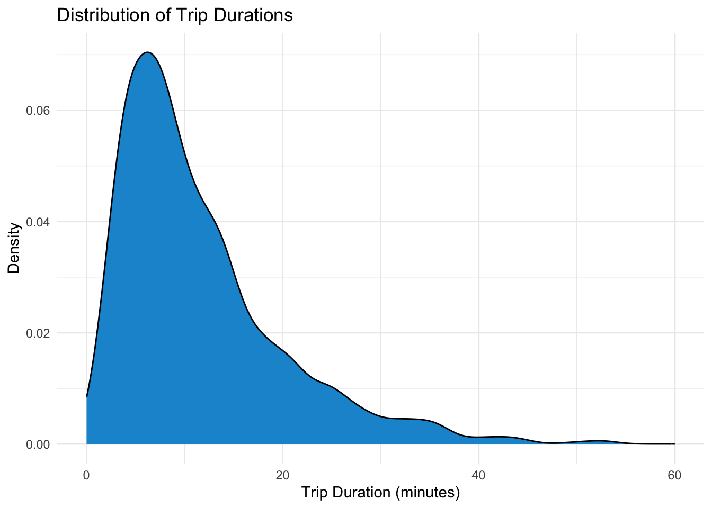
citibike_sample_2018 |>
ggplot(aes(x = tripduration_min)) +
geom_density() +
labs(
title = "Distribution of Trip Duration",
x = "Trip Duration (minutes)",
y = "Density"
) +
xlim(0, 60) +
remove_axis(axis = "y") +
remove_ticks()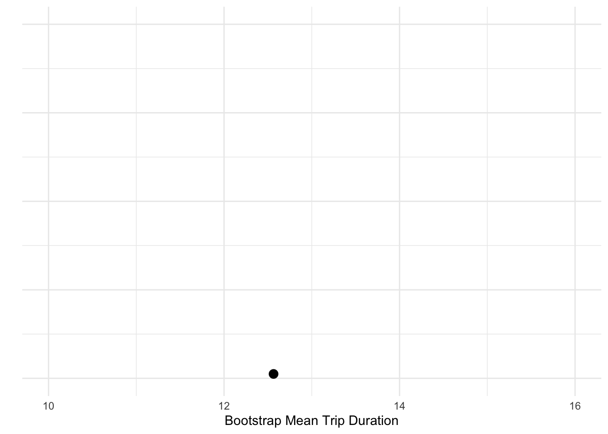
Bootstrap confidence interval for mean trip duration
set.seed(557)
citibike_sample_2018 |>
slice_sample(n = nrow(citibike_sample_2018), replace = TRUE) |>
pull(tripduration_min) |>
mean(na.rm = TRUE)[1] 12.56418set.seed(557)
boot_dist_1 <- citibike_sample_2018 |>
specify(response = tripduration_min) |>
generate(reps = 1, type = "bootstrap") |>
calculate(stat = "mean")
print(boot_dist_1)Response: tripduration_min (numeric)
# A tibble: 1 × 1
stat
<dbl>
1 12.56418333boot_dist_1 |>
ggplot(aes(x = stat)) +
geom_dotplot(binwidth = 0.1, fill = "#1696d2", stroke = 0) +
xlim(10, 16) +
labs(x = "Bootstrap Mean Trip Duration", y = "") +
theme(axis.text.y = element_blank(),
axis.ticks.y = element_blank(),
panel.grid.minor = element_blank()
)
ggsave(
filename = "images/citibike_boot_1.png",
width = 6,
height = 4,
units = "in",
dpi = 300
)set.seed(557)
boot_dist_10 <- citibike_sample_2018 |>
specify(response = tripduration_min) |>
generate(reps = 10, type = "bootstrap") |>
calculate(stat = "mean")
print(boot_dist_10)Response: tripduration_min (numeric)
# A tibble: 10 × 2
replicate stat
<int> <dbl>
1 1 12.56418333
2 2 12.6653
3 3 12.63868333
4 4 12.27995
5 5 13.2369
6 6 12.38261667
7 7 12.23016667
8 8 11.41803333
9 9 12.26963333
10 10 12.17411667boot_dist_10 |>
ggplot(aes(x = stat)) +
geom_dotplot(binwidth = 0.1, fill = "#1696d2", stroke = 0) +
xlim(10, 16) +
labs(x = "Bootstrap Mean Trip Duration", y = "") +
theme(axis.text.y = element_blank(),
axis.ticks.y = element_blank(),
panel.grid.minor = element_blank()
)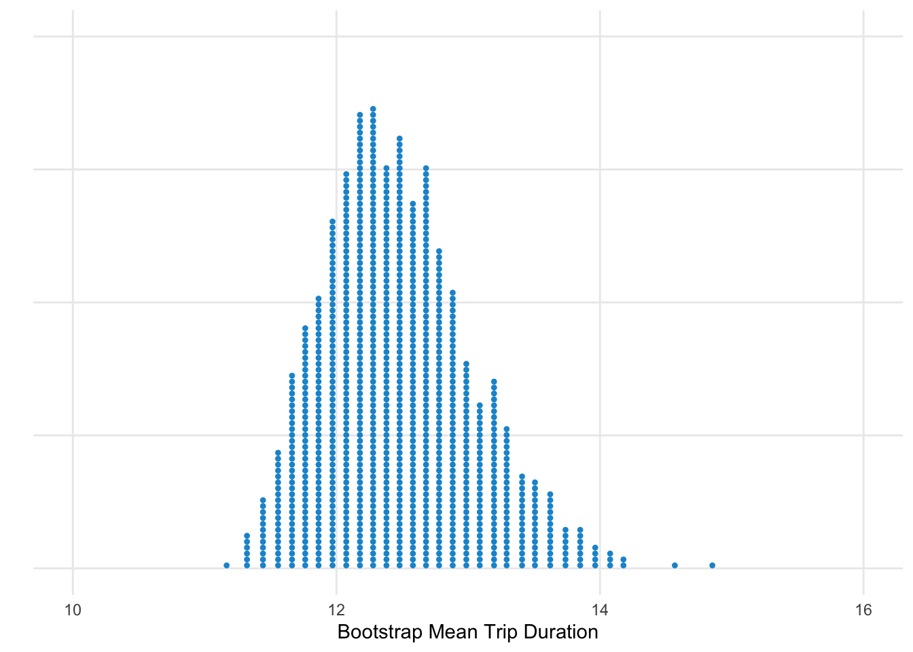
ggsave(
filename = "images/citibike_boot_10.png",
width = 6,
height = 4,
units = "in",
dpi = 300
)set.seed(557)
boot_dist_1000 <- citibike_sample_2018 |>
specify(response = tripduration_min) |>
generate(reps = 1000, type = "bootstrap") |>
calculate(stat = "mean")
boot_dist_1000 |>
ggplot(aes(x = stat)) +
geom_dotplot(binwidth = 0.1, dotsize = .45, fill = "#1696d2", stroke = 0) +
xlim(10, 16) +
labs(x = "Bootstrap Mean Trip Duration", y = "") +
theme(axis.text.y = element_blank(),
axis.ticks.y = element_blank(),
panel.grid.minor = element_blank()
)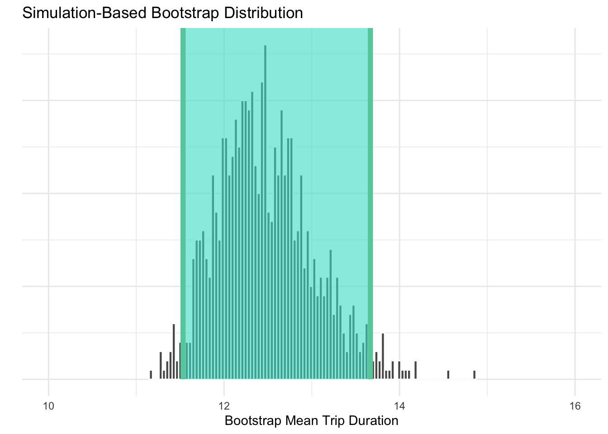
ggsave(
filename = "images/citibike_boot_1000.png",
width = 6,
height = 4,
units = "in",
dpi = 300
)boot_ci <- boot_dist_1000 |>
get_confidence_interval(level = 0.95, type = "percentile")
print(boot_ci)# A tibble: 1 × 2
lower_ci upper_ci
<dbl> <dbl>
1 11.53287042 13.66787833boot_dist_1000 |>
visualize(bins = 100, fill = "#1696d2", stroke = 0) +
shade_confidence_interval(endpoints = boot_ci, fill = "#fdbf11", color = "#fdbf11") +
xlim(10, 16) +
labs(x = "Bootstrap Mean Trip Duration", y = "") +
theme(axis.text.y = element_blank(),
axis.ticks.y = element_blank(),
panel.grid.minor = element_blank()
)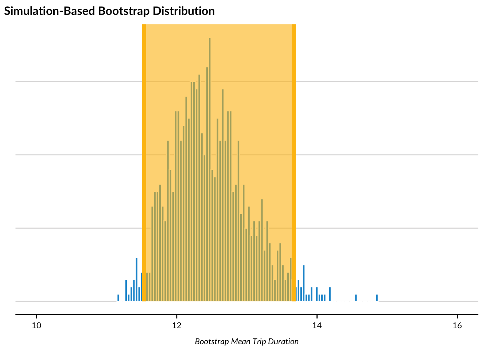
ggsave(
filename = "images/citibike_boot_ci.png",
width = 6,
height = 4,
units = "in",
dpi = 300
)Mathematical confidence interval for mean trip duration
citibike_sample_2018 |>
select(tripduration_min) |>
t.test(conf.level = 0.95) |>
tidy()# A tibble: 1 × 8
estimate statistic p.value parameter conf.low conf.high method
<dbl> <dbl> <dbl> <dbl> <dbl> <dbl> <chr>
1 12.47675 22.70511189 2.347020611e-92 999 11.39841822 13.55508178 One Sa…
# ℹ 1 more variable: alternative <chr>Comparison of bootstrap and mathematical confidence intervals
pop_mean <- mean(citibike_2018$tripduration_min, na.rm = TRUE)
boot_mean <- mean(boot_dist_1000$stat)
t_result <- citibike_sample_2018 |>
select(tripduration_min) |>
t.test(conf.level = 0.95) |>
tidy()
ci_table <-
tibble(
Method = c("Population (True)", "Bootstrap", "T-test"),
Mean = c(pop_mean, boot_mean, t_result$estimate),
Lower_CI = c(NA, boot_ci$lower_ci, t_result$conf.low),
Upper_CI = c(NA, boot_ci$upper_ci, t_result$conf.high)
) |>
kable(digits = 4) |>
kable_styling(full_width = FALSE,
font_size = 14,
html_font = "Lato")
ci_table| Method | Mean | Lower_CI | Upper_CI |
|---|---|---|---|
| Population (True) | 13.2123 | NA | NA |
| Bootstrap | 12.4657 | 11.5329 | 13.6679 |
| T-test | 12.4767 | 11.3984 | 13.5551 |
Bivariate analysis: Trip duration by weekday vs. weekend
citibike_sample_2018 |>
ggplot(aes(x = tripduration_min, fill = weekday_weekend)) +
geom_density(alpha = 0.5) +
labs(
title = "Distribution of Trip Durations by Week Part",
x = "Trip Duration (minutes)",
y = "Density",
fill = "Week Part"
) +
xlim(0, 60) +
remove_axis(axis = "y") +
remove_ticks()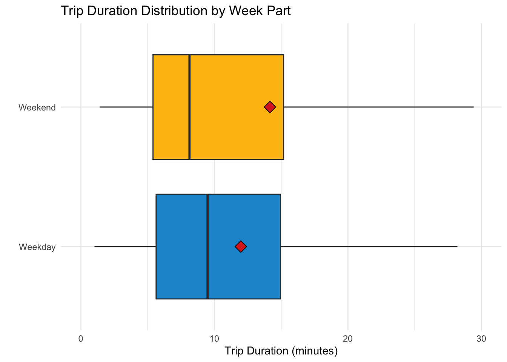
citibike_sample_2018 |>
ggplot(aes(x = weekday_weekend, y = tripduration_min, fill = weekday_weekend)) +
geom_boxplot(show.legend = FALSE, outlier.shape = NA) +
stat_summary(
fun = mean,
geom = "point",
shape = 23,
size = 4,
fill = "#db2b27",
color = "#000000",
show.legend = FALSE
) +
labs(
title = "Trip Duration Distribution by Week Part",
x = "",
y = "Trip Duration (minutes)"
) +
coord_flip(ylim = c(0, 30))
Randomization test: Mean trip duration on weekdays vs. weekends
Calculate observed difference in means
obs_diff <- citibike_sample_2018 |>
specify(tripduration_min ~ weekday_weekend) |>
calculate(stat = "diff in means", order = c("Weekend", "Weekday"))
obs_diffResponse: tripduration_min (numeric)
Explanatory: weekday_weekend (factor)
# A tibble: 1 × 1
stat
<dbl>
1 2.181183533Generate null distribution through permutation
set.seed(557)
null_distribution <- citibike_sample_2018 |>
specify(tripduration_min ~ weekday_weekend) |>
hypothesize(null = "independence") |>
generate(reps = 1000, type = "permute") |>
calculate(stat = "diff in means", order = c("Weekend", "Weekday"))Visualize null distribution with observed statistic
null_distribution |>
visualize() +
shade_p_value(obs_stat = obs_diff$stat, direction = "two_sided") +
labs(
title = "Null Distribution of Mean Trip Duration Difference",
x = "Difference in Mean Trip Duration (Weekend - Weekday)",
y = "Frequency"
) +
remove_axis(axis = "y") +
remove_ticks()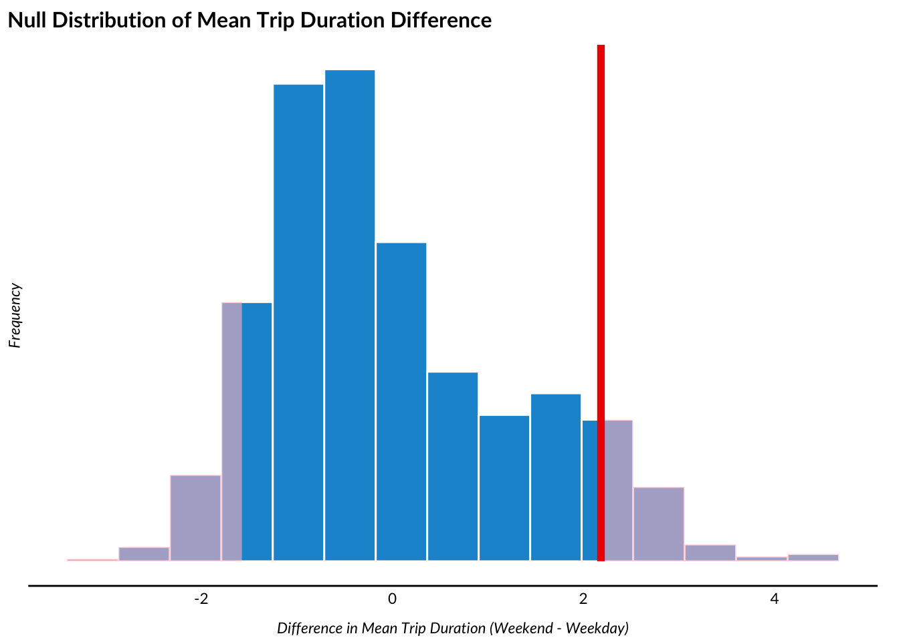
null_distribution |>
get_p_value(obs_stat = obs_diff$stat, direction = "two-sided")# A tibble: 1 × 1
p_value
<dbl>
1 0.156Mathematical two-sample t-test: Mean trip duration on weekdays vs. weekends
citibike_sample_2018 |>
mutate(weekday_weekend = fct_relevel(weekday_weekend, "Weekend", "Weekday")) |>
(\(x) t.test(tripduration_min ~ weekday_weekend, data = x, var.equal = FALSE))() |>
tidy()# A tibble: 1 × 10
estimate estimate1 estimate2 statistic p.value parameter
<dbl> <dbl> <dbl> <dbl> <dbl> <dbl>
1 2.181183533 14.15844250 11.97725897 1.047047861 0.2961176552 243.0440771
# ℹ 4 more variables: conf.low <dbl>, conf.high <dbl>, method <chr>,
# alternative <chr>Comparison of randomization test and t-test results
true_diff <- citibike_2018 |>
group_by(weekday_weekend) |>
summarize(mean_duration = mean(tripduration_min, na.rm = TRUE)) |>
summarize(diff = diff(mean_duration)) |>
pull(diff)
randomization_result <-
null_distribution |>
get_p_value(obs_stat = obs_diff$stat, direction = "two-sided") |>
pull(p_value)
t_test_result <- citibike_sample_2018 |>
mutate(weekday_weekend = fct_relevel(weekday_weekend, "Weekend", "Weekday")) |>
(\(x) t.test(tripduration_min ~ weekday_weekend, data = x, var.equal = FALSE))() |>
tidy()
tibble(
Method = c("Population (True)", "Randomization Test", "T-test"),
Difference = c(
true_diff,
obs_diff$stat,
t_test_result$estimate
),
P_Value = c(
NA,
randomization_result,
t_test_result$p.value
)
)# A tibble: 3 × 3
Method Difference P_Value
<chr> <dbl> <dbl>
1 Population (True) 1.750170423 NA
2 Randomization Test 2.181183533 0.156
3 T-test 2.181183533 0.2961176552Bivariate analysis: Trip duration by user type
citibike_sample_2018 |>
ggplot(aes(x = tripduration_min, fill = usertype)) +
geom_density(alpha = 0.5) +
labs(
title = "Distribution of Trip Durations by User Type",
x = "Trip Duration (minutes)",
y = "Density",
fill = "User Type"
) +
xlim(0, 60) +
remove_axis(axis = "y") +
remove_ticks()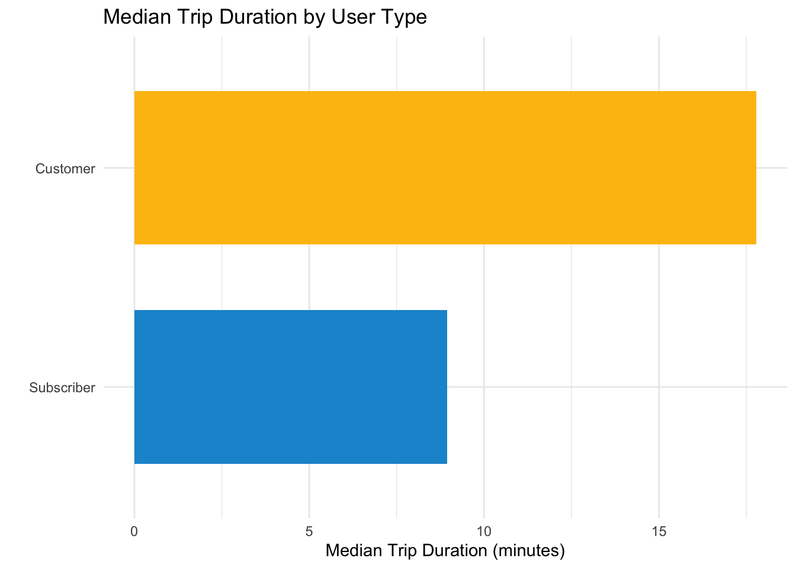
citibike_sample_2018 |>
ggplot(aes(x = usertype, y = tripduration_min, fill = usertype)) +
geom_boxplot(show.legend = FALSE, outlier.shape = NA) +
stat_summary(
fun = mean,
geom = "point",
shape = 23,
size = 4,
fill = "#db2b27",
color = "#000000",
show.legend = FALSE
) +
labs(
title = "Trip Duration Distribution by Usertype",
x = "",
y = "Trip Duration (minutes)"
) +
coord_flip(ylim = c(0, 60))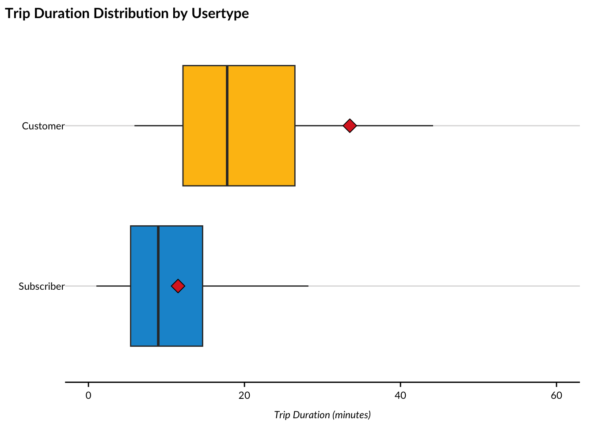
citibike_sample_2018 |>
group_by(usertype) |>
summarize(median_duration = median(tripduration_min, na.rm = TRUE)) |>
ggplot(aes(x = usertype, y = median_duration, fill = usertype)) +
urbnthemes::geom_col(show.legend = FALSE) +
labs(
title = "Median Trip Duration by User Type",
x = "",
y = "Median Trip Duration (minutes)"
) +
coord_flip()
obs_diff_median <- citibike_sample_2018 |>
specify(tripduration_min ~ usertype) |>
calculate(stat = "diff in medians", order = c("Customer", "Subscriber"))
obs_diff_medianResponse: tripduration_min (numeric)
Explanatory: usertype (factor)
# A tibble: 1 × 1
stat
<dbl>
1 8.833333333set.seed(557)
null_distribution_median <- citibike_sample_2018 |>
specify(tripduration_min ~ usertype) |>
hypothesize(null = "independence") |>
generate(reps = 1000, type = "permute") |>
calculate(stat = "diff in medians", order = c("Customer", "Subscriber"))null_distribution_median |>
visualize() +
shade_p_value(obs_stat = obs_diff_median, direction = "two-sided") +
labs(
title = "Null Distribution of Difference in Median Trip Duration",
x = "Difference in Median Duration (minutes)",
y = "Count"
)
null_distribution_median |>
get_p_value(obs_stat = obs_diff_median, direction = "two-sided")# A tibble: 1 × 1
p_value
<dbl>
1 0wilcox.test(tripduration_min ~ usertype,
data = citibike_sample_2018,
exact = FALSE) |>
tidy()# A tibble: 1 × 4
statistic p.value method alternative
<dbl> <dbl> <chr> <chr>
1 9961.5 1.148162973e-9 Wilcoxon rank sum test with continuity c… two.sided true_diff_median <- citibike_2018 |>
group_by(usertype) |>
summarize(median_duration = median(tripduration_min, na.rm = TRUE)) |>
summarize(diff = diff(median_duration)) |>
pull(diff)
randomization_result_median <-
null_distribution_median |>
get_p_value(obs_stat = obs_diff_median, direction = "two-sided") |>
pull(p_value)
wilcox_result <- wilcox.test(tripduration_min ~ usertype,
data = citibike_sample_2018,
exact = FALSE) |>
tidy()
tibble(
Method = c("Population (True)", "Randomization Test", "Wilcoxon Test"),
Difference = c(
true_diff_median,
obs_diff_median$stat,
obs_diff_median$stat # Same observed difference
),
P_Value = c(
NA,
randomization_result_median,
wilcox_result$p.value
)
)# A tibble: 3 × 3
Method Difference P_Value
<chr> <dbl> <dbl>
1 Population (True) 11 NA
2 Randomization Test 8.833333333 0
3 Wilcoxon Test 8.833333333 1.148162973e-9citibike_sample_2018 |>
ggplot(aes(x = time_of_day, y = tripduration_min, fill = time_of_day)) +
geom_boxplot(show.legend = FALSE, outlier.shape = NA) +
stat_summary(
fun = mean,
geom = "point",
shape = 23,
size = 3,
fill = "#db2b27",
color = "#000000",
show.legend = FALSE
) +
labs(
title = "Trip Duration Distribution by Time of Day",
x = "",
y = "Trip Duration (minutes)"
) +
coord_flip(ylim = c(0, 30))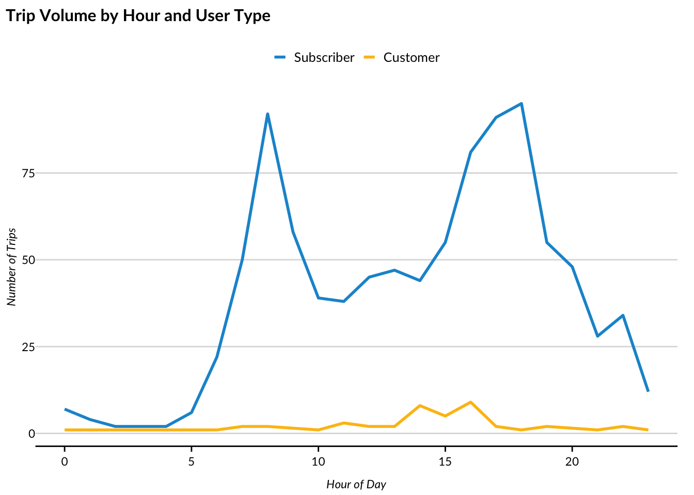
aov(tripduration_min ~ time_of_day, data = citibike_sample_2018) |>
tidy()# A tibble: 2 × 6
term df sumsq meansq statistic p.value
<chr> <dbl> <dbl> <dbl> <dbl> <dbl>
1 time_of_day 4 2193.874083 548.4685206 1.822315809 0.1222903112
2 Residuals 995 299468.4979 300.9733647 NA NA citibike_sample_2018 |>
count(hour_of_day, usertype) |>
ggplot(aes(x = hour_of_day, y = n, color = usertype)) +
geom_line(linewidth = 1) +
geom_label(
data = ~group_by(.x, usertype) |> filter(hour_of_day == max(hour_of_day)),
aes(label = usertype),
hjust = -0.1,
size = 3,
fontface = "bold",
fill = "white",
label.size = 0,
label.padding = unit(0.15, "lines")
) +
scale_x_continuous(
breaks = seq(0, 24, by = 6),
expand = expansion(mult = c(0.02, 0.15))
) +
labs(title = "Trip Volume by Hour and User Type",
x = "Hour of Day", y = "Number of Trips") +
theme(legend.position = "none") +
coord_cartesian(clip = "off")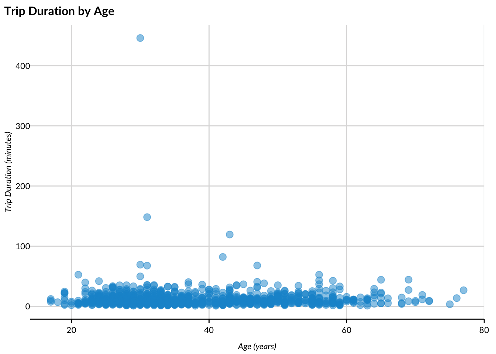
ggsave(
filename = "images/citibike_hour_user.png",
width = 6,
height = 4,
units = "in",
dpi = 300
)citibike_sample_2018 |>
count(day_of_week, usertype) |>
ggplot(aes(x = day_of_week, y = n, color = usertype, group = usertype)) +
geom_line(linewidth = 1) +
geom_label(
data = ~group_by(.x, usertype) |> filter(day_of_week == max(day_of_week)),
aes(label = usertype),
hjust = -0.1,
size = 3,
fontface = "bold",
fill = "white",
label.size = 0,
label.padding = unit(0.15, "lines")
) +
scale_x_discrete(
expand = expansion(mult = c(0.02, 0.15))
) +
labs(title = "Trip Volume by Day of Week and User Type",
x = "Day of Week", y = "Number of Trips") +
theme(legend.position = "none") +
coord_cartesian(clip = "off")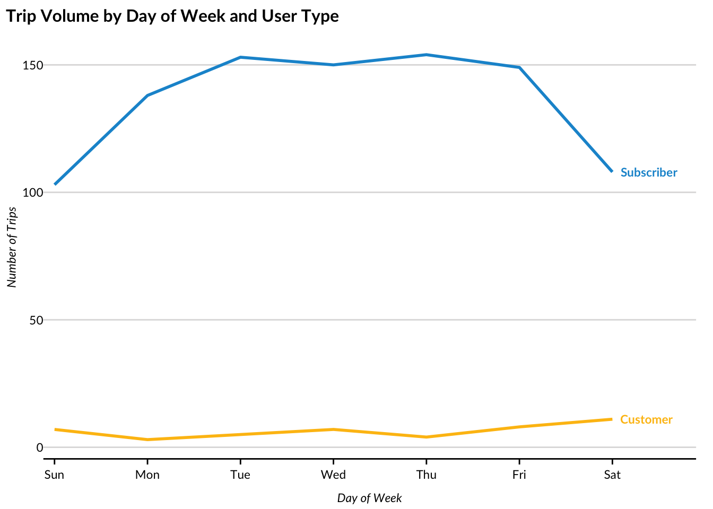
citibike_sample_2018 |>
count(month, usertype) |>
ggplot(aes(x = month, y = n, color = usertype, group = usertype)) +
geom_line(linewidth = 1) +
geom_label(
data = ~group_by(.x, usertype) |> filter(month == max(month)),
aes(label = usertype),
hjust = -0.1,
size = 3,
fontface = "bold",
fill = "white",
label.size = 0,
label.padding = unit(0.15, "lines")
) +
scale_x_discrete(
expand = expansion(mult = c(0.02, 0.15))
) +
labs(title = "Trip Volume by Month and User Type",
x = "Month", y = "Number of Trips") +
theme(legend.position = "none") +
coord_cartesian(clip = "off")
citibike_sample_2018 |>
ggplot(aes(x = approx_age, y = tripduration_min)) +
geom_point(alpha = 0.5) +
labs(
title = "Trip Duration by Age",
x = "Age (years)",
y = "Trip Duration (minutes)"
) +
scatter_grid()
citibike_sample_2018 |>
filter(tripduration_min <= 60) |>
ggplot(aes(x = approx_age, y = tripduration_min)) +
geom_point(alpha = 0.5) +
labs(
title = "Trip Duration by Age (trips ≤ 60 minutes)",
x = "Age (years)",
y = "Trip Duration (minutes)"
) +
scatter_grid()
cor.test(citibike_sample_2018$approx_age,
citibike_sample_2018$tripduration_min) |>
tidy()# A tibble: 1 × 8
estimate statistic p.value parameter conf.low
<dbl> <dbl> <dbl> <int> <dbl>
1 -2.864812463e-3 -9.050305726e-2 0.9279056248 998 -6.484637832e-2
# ℹ 3 more variables: conf.high <dbl>, method <chr>, alternative <chr>citibike_sample_2018 |>
group_by(usertype, gender) |>
summarize(
n = n(),
mean_age = mean(approx_age, na.rm = TRUE),
median_age = median(approx_age, na.rm = TRUE),
.groups = "drop"
)# A tibble: 4 × 5
usertype gender n mean_age median_age
<fct> <fct> <int> <dbl> <dbl>
1 Subscriber Male 738 38.61382114 36
2 Subscriber Female 217 36.64055300 33
3 Customer Male 25 37.04 33
4 Customer Female 20 33.3 30chisq.test(citibike_sample_2018$usertype, citibike_sample_2018$gender) |>
tidy()# A tibble: 1 × 4
statistic p.value parameter method
<dbl> <dbl> <int> <chr>
1 10.04440784 1.528111163e-3 1 Pearson's Chi-squared test with Yates' c…Popular start stations
citibike_sample_2018 |>
count(start_station_name, sort = TRUE) |>
slice_head(n = 10) |>
ggplot(aes(x = reorder(start_station_name, n), y = n)) +
urbnthemes::geom_col() +
coord_flip() +
labs(title = "Top 10 Most Popular Start Stations",
x = "", y = "Number of Trips")
Map of start stations by trip volume
station_counts <- citibike_sample_2018 |>
count(start_station_name, start_station_latitude, start_station_longitude) |>
mutate(
top_station = if_else(rank(desc(n)) <= 10, "Top 10", "Other"),
color = if_else(top_station == "Top 10", "#0a4c6a", "#ca5800")
) |>
arrange(top_station)
leaflet(station_counts) |>
addProviderTiles(providers$CartoDB.Positron) |>
addCircleMarkers(
lng = ~start_station_longitude,
lat = ~start_station_latitude,
radius = ~(n^1.5) * 0.5,
popup = ~paste0(start_station_name, "<br>Trips: ", n),
fillOpacity = 0.7,
color = ~color,
fillColor = ~color,
stroke = TRUE,
weight = 1
) |>
addLegend(
position = "bottomright",
colors = c("#0a4c6a", "#ca5800"),
labels = c("Top 10", "Other"),
title = "Start Station Volume"
)Popular end stations
citibike_sample_2018 |>
count(end_station_name, sort = TRUE) |>
slice_head(n = 10) |>
ggplot(aes(x = reorder(end_station_name, n), y = n)) +
urbnthemes::geom_col() +
coord_flip() +
scale_y_continuous(breaks = seq(0, 10, by = 2.5)) +
labs(title = "Top 10 Most Popular Destination Stations",
x = "", y = "Number of Trips")
Map of popular start and end stations
start_counts <- citibike_sample_2018 |>
count(start_station_name, start_station_latitude, start_station_longitude) |>
slice_max(n, n = 10) |>
mutate(type = "Top Start")
end_counts <- citibike_sample_2018 |>
count(end_station_name, end_station_latitude, end_station_longitude) |>
rename(
start_station_name = end_station_name,
start_station_latitude = end_station_latitude,
start_station_longitude = end_station_longitude
) |>
slice_max(n, n = 10) |>
mutate(type = "Top End")
station_counts <- bind_rows(end_counts, start_counts) |>
mutate(
color = if_else(type == "Top Start", "#0a4c6a", "#ca5800")
)
leaflet(station_counts) |>
addProviderTiles(providers$CartoDB.Positron) |>
addCircleMarkers(
lng = ~start_station_longitude,
lat = ~start_station_latitude,
radius = ~sqrt(n) * 2.5,
popup = ~paste0(start_station_name, "<br>", type, "<br>Trips: ", n),
fillOpacity = 0.7,
color = ~color,
fillColor = ~color,
stroke = TRUE,
weight = 1
) |>
addLegend(
position = "bottomright",
colors = c("#0a4c6a", "#ca5800"),
labels = c("Top 10 Start Stations", "Top 10 End Stations"),
title = "Station Type"
)